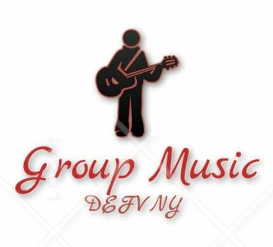

Descarga nuestra App
Introducción
En este documento se redactara la administración que se lleva dentro del proyecto DEFVNY Group Music, en donde se realizara un aplicación móvil y web pero hay diferencias entre las aplicaciones móviles y sitios web móviles. Aunque ambos se utilizan en el mismo medio (smartphones y tablets), aplicaciones móviles (apps) y sitios web móviles (también llamados aplicaciones Web) son muy diferentes. Una aplicación móvil es un programa que se descarga e instala en el dispositivo móvil de un usuario, mientras que un sitio web para móviles no es más que una página web adaptada a los formatos de tabletas y teléfonos inteligentes. Un sitio web para móviles se accede a través de un navegador de Internet, escribiendo la dirección URL de la página web en la barra de navegación. Esto significa que sin descarga se necesita . Sin embargo se requiere una conexión a Internet con el fin de obtener acceso. Una aplicación móvil, se mantiene en el teléfono inteligente del usuario, y es por lo tanto ideal para el uso frecuente y repetido. Por lo tanto, responde a una necesidad específica, mientras que el aumento de la lealtad del cliente. Aunque en ocasiones no nos ponemos a pensar que implica el poder realizar cada una de ellas, pero hasta ahora debemos de comprender que no solo es codificar, sino, que va más allá debe de contar con la documentación pertinente para que no haya ningún conflicto, antes de poder realizar un proyecto viable se necesita esta dicha documentación que a continuación se expondrán cada punto por punto de acuerdo al proyecto realizado. Esta aplicación se genera por la necesidad de tener contactos de los diferentes grupos musicales, para todo tipo de evento y/o usuario de los cueles solo se encuentren dentro del municipio de Nezahualcóyotl.